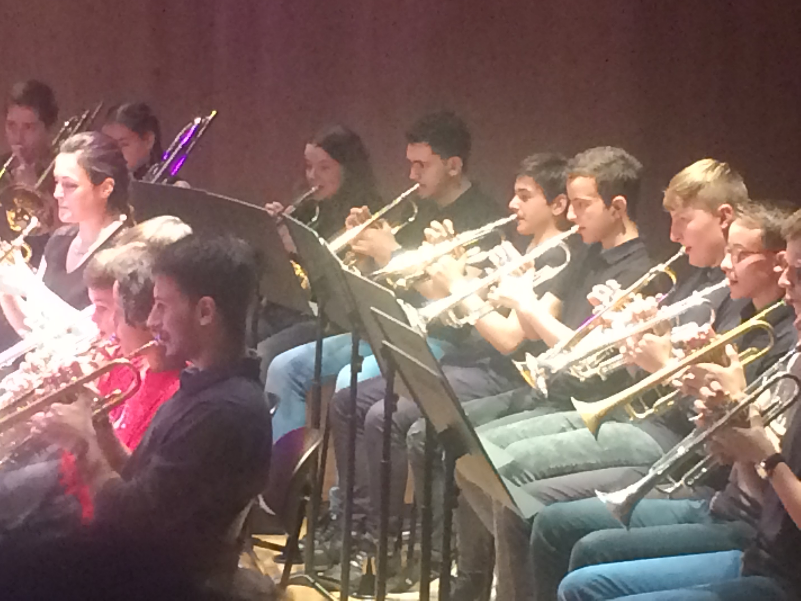

My early years
I started at the age of 8, at the Mulhouse Conservatoire, encouraged by my father, who was also a trumpet player. Right from the start, I liked the instrument and found it a great pleasure to work on, which made learning even easier. By the end of my third year, I'd got quite a head start, which enabled me to master the exam piece for my year and the following year. This enabled me to skip a year and move on to the next cycle. On that occasion, I was also awarded a first class honours degree and the congratulations of the jury.

My experiences
So I entered the second cycle, which at the same time enabled me to join the conservatoire's brass ensemble, which is a collective practice, bringing together different brass instruments. The level required for the brass ensemble was much lower, so I was able to focus on my individual playing. With the brass ensemble, I took part in concerts in prestigious venues such as the Théâtre de la Sinne in Mulhouse and La Filature. I've also played with prestigious orchestras such as the OSM, for the Orchestre Symphonique de Mulhouse.
Now that I'm no longer at the conservatoire, I still play the trumpet from time to time, to keep up my level and because I think it's a shame to stop playing altogether after more than 9 years.
